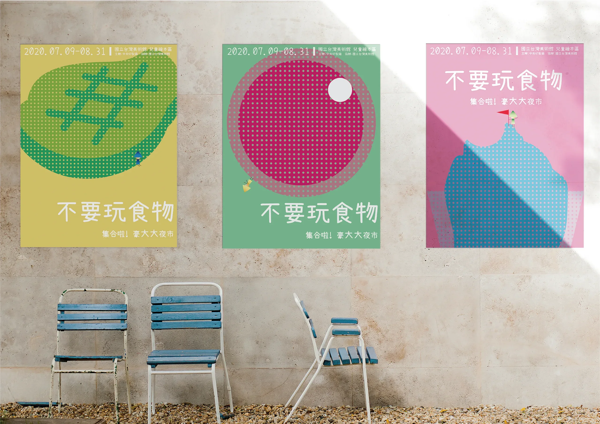
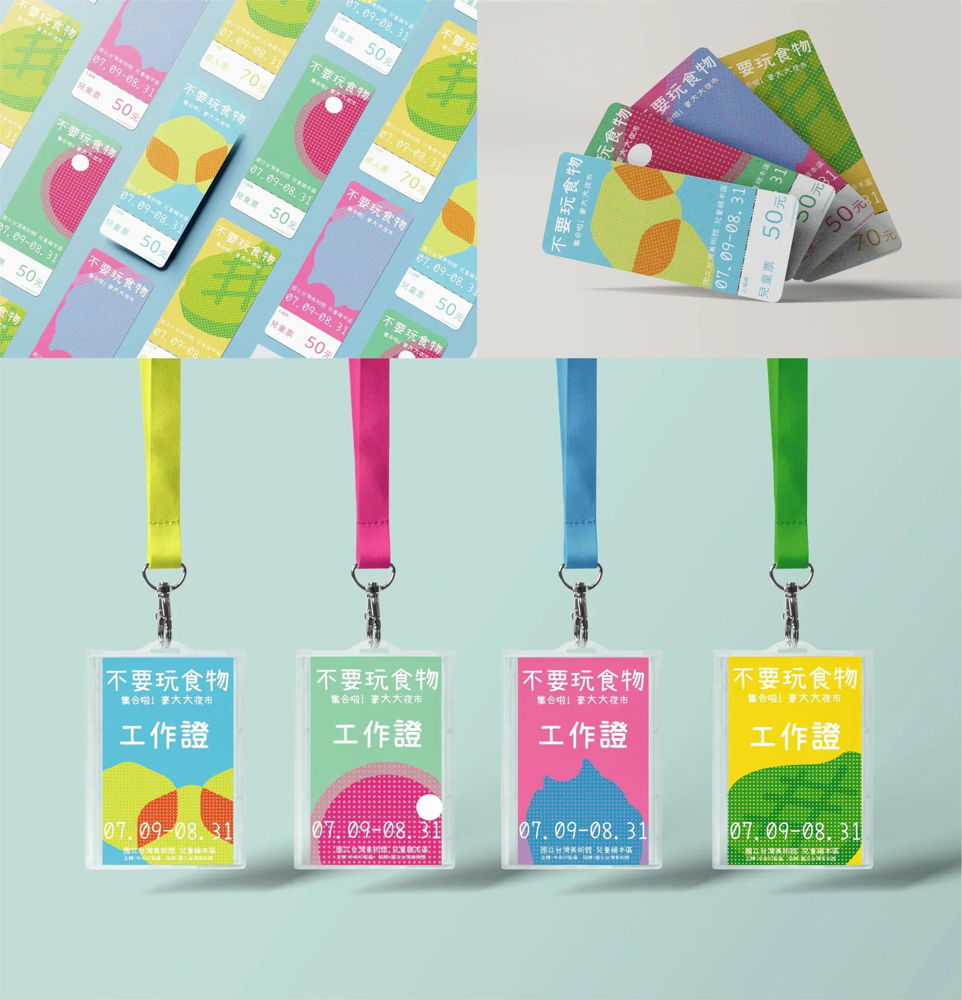
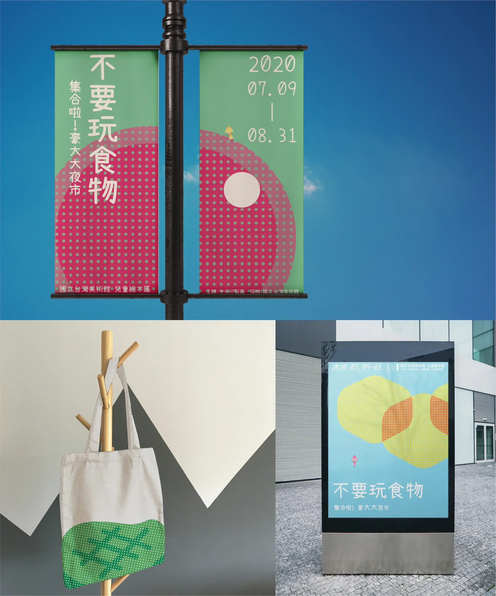
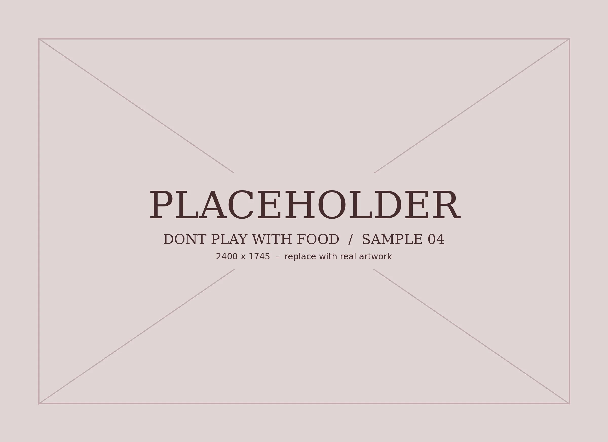

DON'T PLAY WITHYOUR FOOD！
不要玩食物！食べ物で遊ばないで！
展覽設計｜視覺識別｜2020展覧会デザイン｜ビジュアルアイデンティティ｜2020
Design Concept｜設計概念Design Concept｜デザインコンセプト
Print Design｜印刷品設計Print Design｜印刷物デザイン
- CATEGORY
- EXHIBITION / VISUAL DESIGN
- COLOR PALETTE
- CREDIT
- KAYA｜陳致伶｜吳政欣｜張靜慧
以台灣夜市小吃為靈感，企劃親子觀光展覽，將牛排、雞排、珍珠奶茶與臭豆腐轉化為四款遊具。
台湾の夜市グルメをテーマに、親子で楽しめる観光PR展を企画しました。ステーキ、フライドチキン、タピオカミルクティー、臭豆腐を4種類の遊具に見立てています。
將主視覺延伸為展覽宣傳印刷品。
メインビジュアルを展覧会の告知用印刷物へ展開しました。